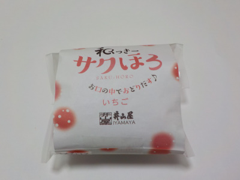
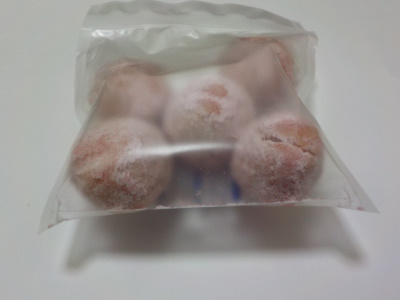

井山屋製菓出雲店の和クッキーサクほろ
更新日 : 2022/01/16

和菓子屋さんのクッキーです。パッケージも和菓子屋さんっぽいかな。

まんまるクッキーにイチゴ味のパウダーがかかっていました。
中はクッキー、外はイチゴパウダー味でした。
島根県出雲市江田町73-3
更新日 : 2022/01/16

和菓子屋さんのクッキーです。パッケージも和菓子屋さんっぽいかな。

まんまるクッキーにイチゴ味のパウダーがかかっていました。
中はクッキー、外はイチゴパウダー味でした。